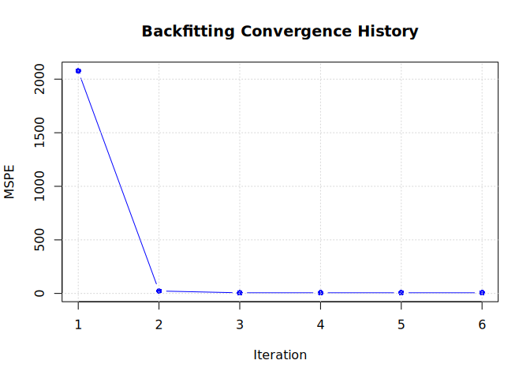

SemiparMF implements a Semiparametric Spatiotemporal Model with Mixed Frequencies.
It is designed for scenarios where the response variable (e.g., quarterly crop yield) is observed at a lower frequency than a key non-parametric predictor (e.g., monthly rainfall or NDVI), while also accounting for parametric covariates and spatial/temporal autocorrelation.
The methodology is based on the paper:
Malabanan, V. A., Lansangan, J. R. G., & Barrios, E. B. (2022). Semiparametric Spatiotemporal Model with Mixed Frequencies: With Application in Crop Forecasting. Science & Engineering Journal, 15(2), 90-107. https://scienggj.org/2022/SciEnggJ%202022-vol15-no02-p90-107-Malabanan%20et%20al.pdf
Installation
You can install the development version of SemiparMF like so:
# install.packages("devtools")
devtools::install_github("jzeuzs/SemiparMF")Example
This example demonstrates how to simulate data and fit the model using the package’s built-in tools.
library(SemiparMF)
library(sf)
#> Linking to GEOS 3.12.1, GDAL 3.8.4, PROJ 9.4.0; sf_use_s2() is TRUE
# 1. Generate synthetic data
# We simulate a 6x6 grid (36 locations) over 50 time points.
# The frequency ratio is 3 (e.g., months per quarter).
set.seed(123)
sim_data <- simulate_semipar_data(n_side = 6, t_len = 50, k = 3, rho_error = 0.5)
# Inspect the data structure
head(sim_data$data)
#> Simple feature collection with 6 features and 5 fields
#> Geometry type: POLYGON
#> Dimension: XY
#> Bounding box: xmin: 0 ymin: 0 xmax: 1 ymax: 1
#> CRS: NA
#> location_id time_id Y Z W geometry
#> 1 1 1 57.58180 79.93880 55 POLYGON ((0 0, 1 0, 1 1, 0 ...
#> 2 1 2 78.72706 116.03521 59 POLYGON ((0 0, 1 0, 1 1, 0 ...
#> 3 1 3 65.18883 100.25659 48 POLYGON ((0 0, 1 0, 1 1, 0 ...
#> 4 1 4 66.99771 97.89679 54 POLYGON ((0 0, 1 0, 1 1, 0 ...
#> 5 1 5 70.53500 103.54290 49 POLYGON ((0 0, 1 0, 1 1, 0 ...
#> 6 1 6 59.84531 89.27175 46 POLYGON ((0 0, 1 0, 1 1, 0 ...
# 2. Fit the Semiparametric Model
# Formula: Response ~ Parametric_Covariate
# We specify the time and ID columns for the panel structure.
fit <- semiparMF(
formula = Y ~ Z,
data_sf = sim_data$data,
high_freq_data = sim_data$X_high,
time_col = "time_id",
id_col = "location_id"
)
#> Calculating spatial weights (Queen Contiguity)...
# 3. View Results
summary(fit)
#>
#> -- Model Summary --
#> Call:
#> semiparMF(formula = Y ~ Z, data_sf = sim_data$data, high_freq_data = sim_data$X_high,
#> time_col = "time_id", id_col = "location_id")
#>
#> Coefficients:
#> Beta (Parametric): 0.49641
#> Gamma (Spatial): -0.00108
#> Rho (Temporal): 0.06947
#>
#> Residuals:
#> Min. 1st Qu. Median Mean 3rd Qu. Max.
#> -7.9549668 -1.6033471 -0.0490949 0.0002055 1.5875291 8.5325065
#>
#> Convergence:
#> Iterations: 6
#> Final MSPE: 5.999642You can also inspect the convergence of the backfitting algorithm by plotting the Mean Squared Prediction Error (MSPE) over iterations.
plot(fit)
Furthermore, you can predict the response for new data. Note that prediction aggregates the high-frequency non-parametric component and adds the parametric linear combination.
# Predict on the training data for demonstration
preds <- predict(
fit,
new_high_freq = sim_data$X_high,
new_z = matrix(sim_data$data$Z, nrow = 36, byrow = TRUE),
new_w = matrix(sim_data$data$W, nrow = 36, byrow = TRUE)
)
# Compare first 5 predictions to actuals
head(as.vector(preds), 5)
#> [1] 57.46916 67.41472 59.56201 68.31180 63.98256
head(sim_data$data$Y, 5)
#> [1] 57.58180 78.72706 65.18883 66.99771 70.53500